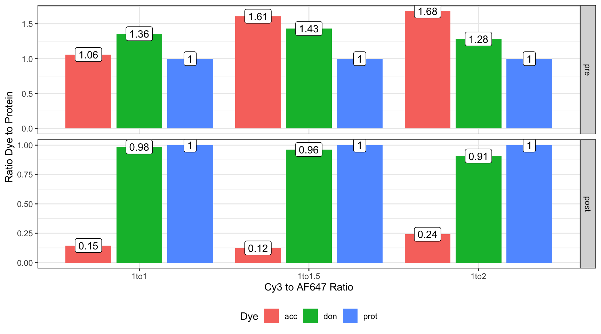

There is much less absorbance in the acceptor peak. The samples also seem a lot ‘pinker’ than they should. Seems that there is a lot less acceptor around, potentially meaning that the dye hasn’t labelled the protein successfully.
`summarise()` has grouped output by 'sample', 'time', 'ratio', 'distance'. You
can override using the `.groups` argument.
Code
binned <- binned |>mutate(ext =case_when( signal =="prot"~30955, signal =="don"~150000, signal =="acc"~265000 ), mw =case_when( signal =="prot"~69803, signal =="don"~666, signal =="acc"~1250 ) ) |>mutate(conc = abs / ext / (distance /10), volume =case_when( time =="pre"~1e-3, time =="post"~2e-3 ), amount = conc * volume, time =factor(time, levels =c("pre", "post")) )
Plotting Ratio of Dyes to Protein
Code
pos =position_dodge2(width =0.9)binned |>group_by(sample, time, ratio) |>mutate(per_prot = amount / amount[which(signal =="prot")] ) |>ggplot(aes(ratio, per_prot, fill = signal)) +geom_col(position = pos) +facet_grid(rows =vars(time),# cols = vars(distance), scales ="free_y" ) +theme_bw() +labs(x ="Cy3 to AF647 Ratio", y ="Ratio Dye to Protein", fill ="Dye" ) +theme(legend.position ="bottom" ) +geom_label(fill ="white",aes(label =round(per_prot, 2)), position = pos )

For some reason, the acceptor dye (AF647) is very low in the post-labelling.
I need to make some adjustments, as I don’t think the ratios of the dyes to the protein are quite correct due to the \(CF_{280}\) of the two dyes which both will absorb a small amoutn at 280 nm, false boosting the amount of ‘protein’ that is detected.